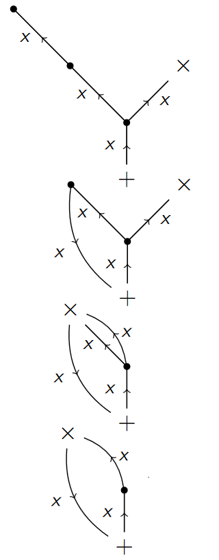

Office 1.127
Alan Turing Building
Manchester
M13 9PY
///gravy.aura.bonds
0161 275 7649

Daniel Heath
Personal Webpage
Office 1.127
Alan Turing Building
Manchester
M13 9PY
///gravy.aura.bonds
0161 275 7649

Publications and Preprints
Preprints should be cited with caution. Please contact me if you'd like to discuss further.[4] Graphical approaches to left adequate monoids
PhD Thesis, University of Manchester. 2025.
December 2025 [Full Text]
Abstract: In this thesis, we explore the class of left adequate monoids as algebras of type (2,1,0). Motivated by advances in geometric and combinatorial inverse semigroup theory, we apply combinatorial methods in order to generalise famed results. We provide some new identities which hold in all left adequate semigroups which are most easily viewed via the trees of Kambites. We then consider the monogenic case, and give a representation of the monogenic free left adequate monoid FLAd1 inspired by Gluskin’s representation of the monogenic free inverse monoid. By leveraging our representation, we directly calculate the spherical growth of FLAd1 and show it admits a relationship with partitions and grows intermediately. Conversely, we demonstrate the exponential growth of monogenic free two-sided adequate monoids, and in both one and two-sided free structures of higher rank. This generalises work of Kambites et al. on free inverse monoids. We then introduce a new class of left adequate monoids which we term pretzel monoids. Akin to the expansions of Margolis and Meakin, these are monoids of birooted graphs whose operations are given by a gluing and folding procedure similar to operations of Stephen. We show that pretzel monoids admit a class of presentations in the quasi-variety of left adequate monoids which naturally mirrors that of Margolis-Meakin expansions for inverse monoids. We explore properness and categorical properties, and show them to be free idempotent-pure expansions of special right cancellative monoids.
[3] Growth and identities of monogenic free adequate monoids (with Thomas Aird)
Preprint (submitted). 2025.
September 2025 [arXiv]
Abstract: Motivated by recent advances in inverse semigroup theory, we investigate the growth of and identities satisfied by free left and free two-sided adequate monoids. We explicitly compute the growth of the monogenic free left adequate monoid with the usual unary monoid generating set and show it has intermediate growth owing to a connection with integer partitions. In the two-sided case, we establish a lower bound on the (idempotent) growth rate of the monogenic free adequate monoid, showing that it grows exponentially. We completely classify the enriched identities satisfied by the monogenic free left adequate monoid and deduce that it satisfies the same monoid identities as the sylvester monoid. In contrast, we show that the monogenic free two-sided adequate monoid satisfies no non-trivial monoid identities.
[2] Pretzel monoids (with Mark Kambites and Nóra Szakács)
International Journal of Algebra and Computation Vol. 35(5), pp. 647-684. 2025.
May 2025 [arXiv] [Journal]
Abstract: We introduce an interesting class of left adequate monoids which we call pretzel monoids. These, on the one hand, are monoids of birooted graphs with respect to a natural `glue-and-fold' operation, and on the other hand, are shown to be defined in the category of left adequate monoids by a natural class of presentations. They are also shown to be the free idempotent-pure expansions of right cancellative monoids, making them, in some sense, the left adequate analogues of Margolis-Meakin expansions for inverse monoids. The construction recovers the second author's geometric model of free left adequate monoids when the right cancellative monoid is free.
[1] A collection of cancellative, singly aligned, non-group embeddable monoids (with Milo Edwardes)
Semigroup Forum Vol. 110(2), pp. 296-307. 2025.
April 2025 [arXiv] [Journal]
Abstract: By classical results of Malcev, cancellative monoids need not be group-embeddable. In this paper, we describe and give presentations for and study an infinite family Mn of cancellative monoids which are not group-embeddable, originating from Malcev's original work. We show that Mn is singly aligned for n ≥ 2, owing to applications in the study of C*-algebras by Brix, Bruce and Dor-On. We finish by showing that M1 is not singly aligned, but is 2-aligned.